专题02 与绝对值的有关的化简的六种模型

目录
题型一：已知参数的范围化简绝对值 1
题型二：利用绝对值非负性进行求解 2
题型三：化简含绝对值的多重符号 4
题型四：利用点在数轴上的位置化简绝对值 6
题型五：利用绝对值的性质分类讨论 9
题型六：利用绝对值的几何意义化简绝对值 15

题型一：已知参数的范围化简绝对值
1.若 ，则化简
，则化简 ．
．
2．若 ，则
，则 ；当
；当 时，
时， ．
．
3．若
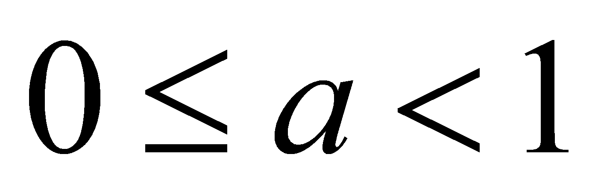
，则 ．
．4．若 ，则
，则 ．
．
5．若
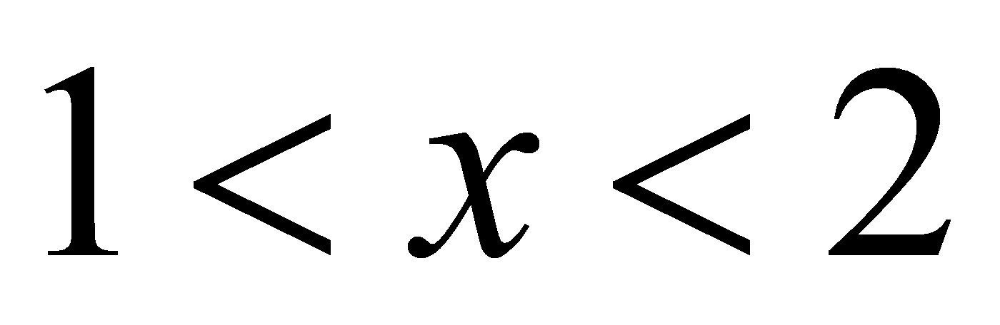
，求代数式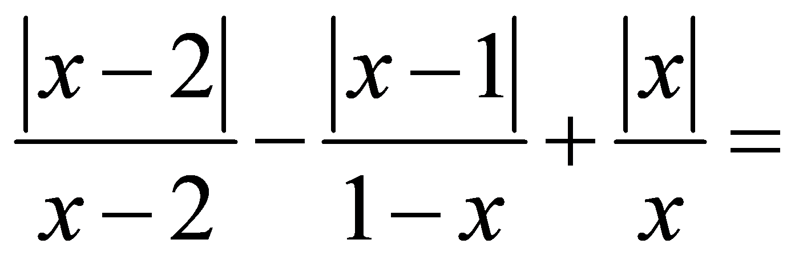
．题型二：利用绝对值非负性进行求解
6．若
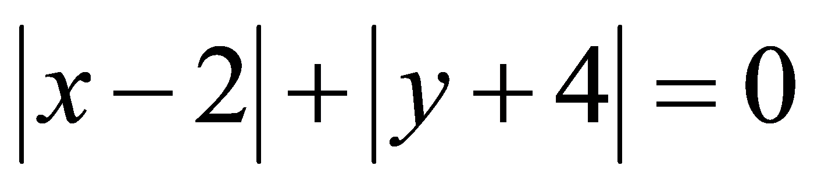
，则 ，
， ．
．7．已知
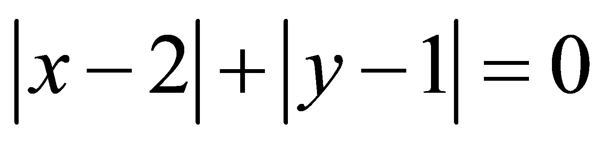
，则 的相反数的绝对值为 ．
的相反数的绝对值为 ．8．若x为有理数，则式子 的最小值为 ．
的最小值为 ．
9．已知 ．
．
(1)求 与
与 的值；
的值；
(2)若 ，求
，求 的相反数．
的相反数．
10．根据 这一性质，解答下列问题：
这一性质，解答下列问题：
(1)当 时，
时， 有最小值，此时最小值为 ；
有最小值，此时最小值为 ；
(2)当a取何值时，
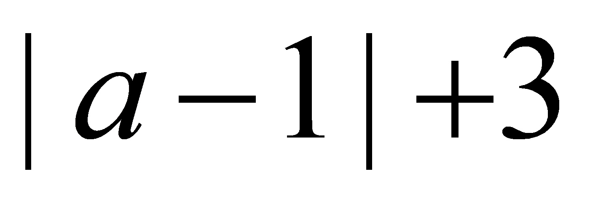
有最小值？这个最小值是多少？(3)当a取何值时，
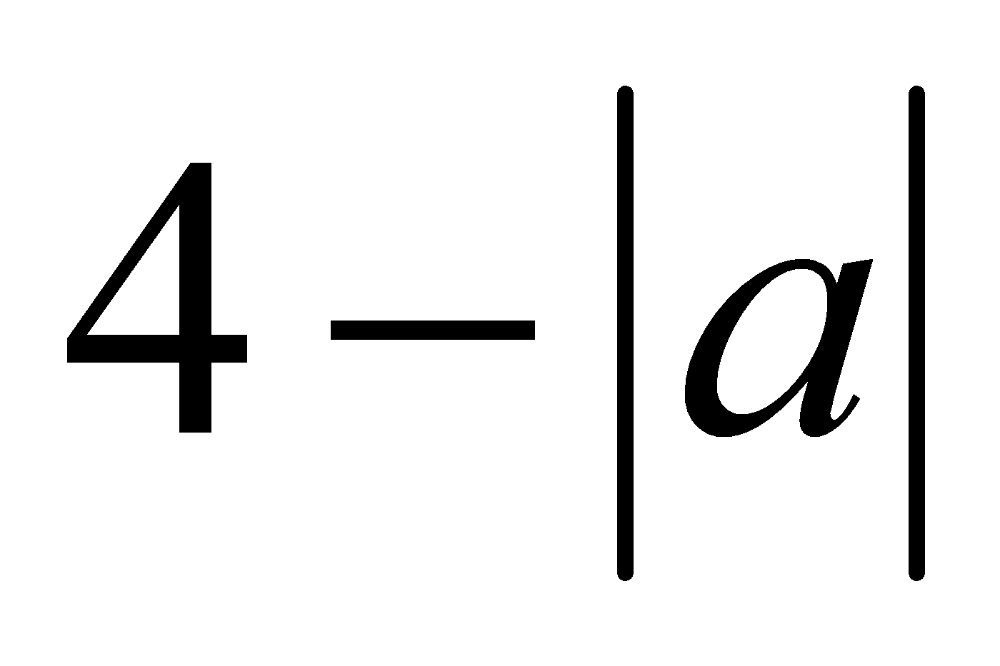
有最大值？这个最大值是多少？题型三：化简含绝对值的多重符号
11．化简：
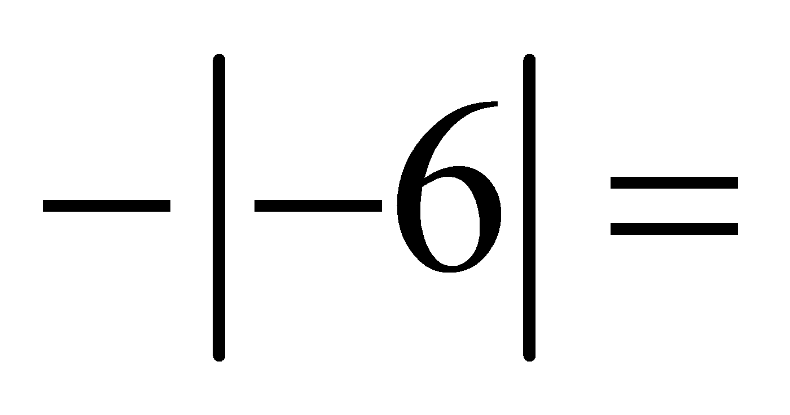


12．化简：(1) ；(2)
；(2) ；(3)
；(3)
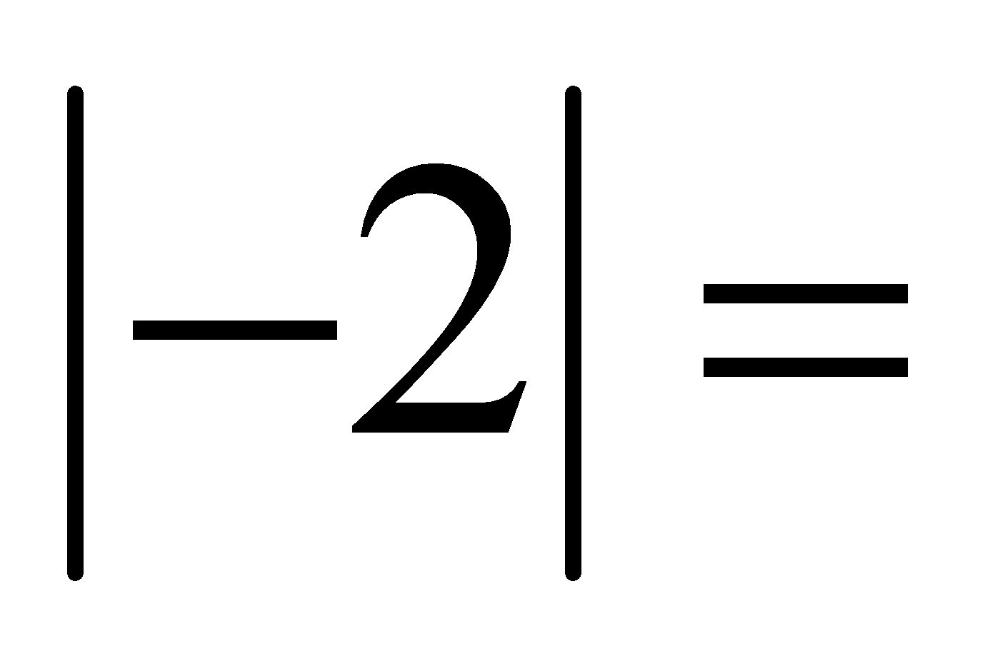
．13．化简下列各数的符号： ；
；
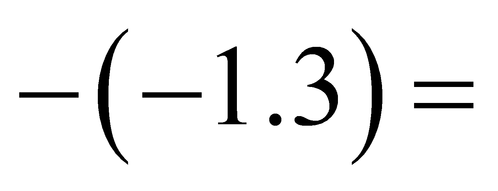
；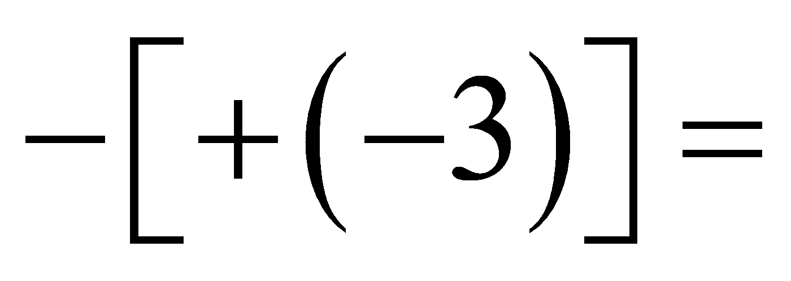
；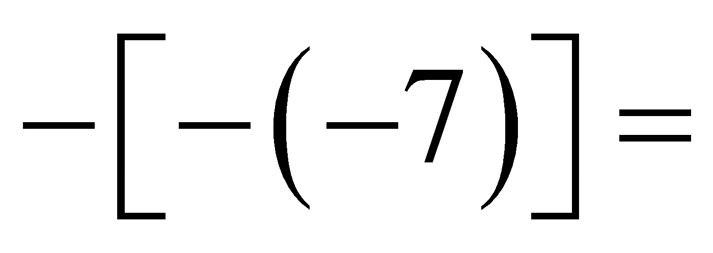
．14．化简：
（1）
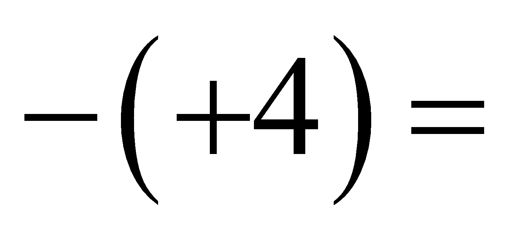
；（2）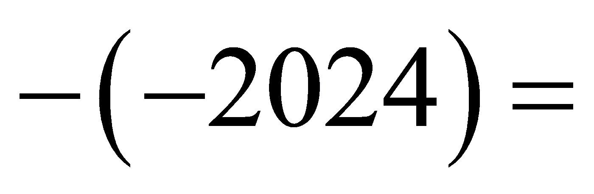
；（3） ；（4）
；（4） ．
．
15．化简：
（1） ；（2）
；（2） ；（3）
；（3） ；
；
（4）
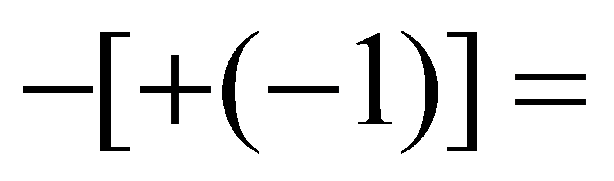
；（5） ；（6）
；（6）
题型四：利用点在数轴上的位置化简绝对值
16．若数轴上的点A、B、C分别表示有理数a，b，c，O为原点，如图所示．

(1)用“ ”或“
”或“ ”填空：a______0，b______0；
”填空：a______0，b______0；
(2)化简
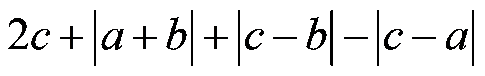
．17．已知 在数轴上对应点的位置如图所示，若
在数轴上对应点的位置如图所示，若 互为相反数．
互为相反数．

(1)判断下列各式与0的大小：① ______0；②
______0；② ______0；③
______0；③ ______0；
______0；
(2)化简式子： ．
．
18．已知三个实数、、 在数轴上对应的点如图所示．
在数轴上对应的点如图所示．
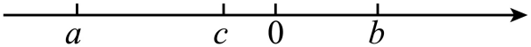
(1)判断正负：
 0，
0， 0，
0， 0， 0．
0， 0．
(2)根据（1）中的判断化简： ．
．
19．已知有理数a，b，c在数轴上对应点的位置如图所示：

(1)a________2， ________1，
________1， ________2；（填“”或“”）
________2；（填“”或“”）
(2)化简： ．
．
20．已知有理数、在数轴上对应位置如图：
(1)用“”或“”填空：
① ；②
；② ；
；
(2)比较、、 、的大小（用“”把它们连接起来）；
、的大小（用“”把它们连接起来）；
(3)化简： ．
．
题型五：利用绝对值的性质分类讨论
21．分类讨论思想是数学的重要思想，在学习有理数的过程中，也深有感受！
(1)当 时，若
时，若 ，
， 则_________0；
则_________0；
(2)当 时，若
时，若 ，则c_________0；
，则c_________0；
(3)已知a，b，c是非零有理数，求 的值．
的值．
22．综合与实践
我们知道，在研究和解决数学问题时，当问题所给对象不能进行统一研究时，我们就需要根据数学对象的本质属性的相同点和不同点，将对象区分为不同种类，然后逐类进行研究和解决，最后综合各类结果得到整个问题的解决，这一思想方法，我们称之为“分类讨论的思想”．这一数学思想用处非常广泛，我们经常用这种方法解决问题．例如：我们在讨论 |的值时，就会对进行分类讨论，当
|的值时，就会对进行分类讨论，当 时，
时，
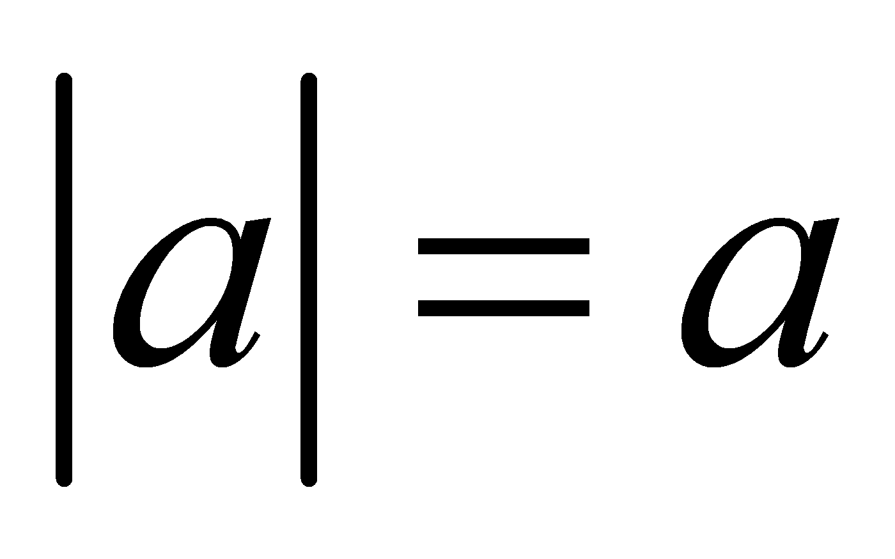
；当 时，
时， ．现在请你利用这一思想解决下列问题．
．现在请你利用这一思想解决下列问题．(1)
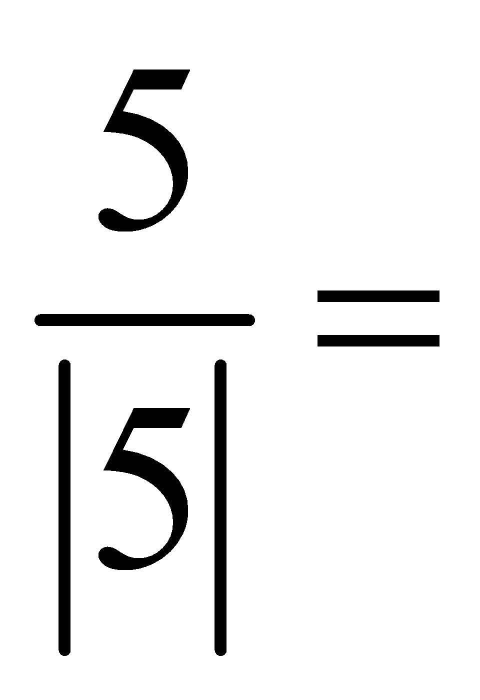
________， ________．
________．(2)
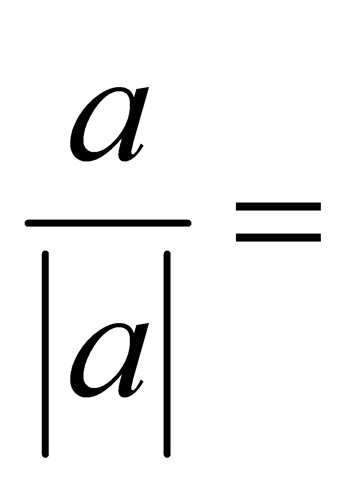
________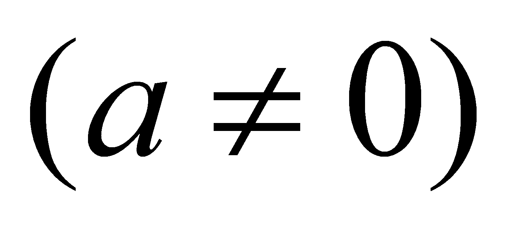
， ________（其中
________（其中 ，
， ）．
）．(3)若 ，试求
，试求 的所有可能的值．
的所有可能的值．
23．阅读下列材料： ，即当
，即当 时，
时， ，当
，当 时，
时， ，运用以上结论解决下面问题：
，运用以上结论解决下面问题：
(1)当
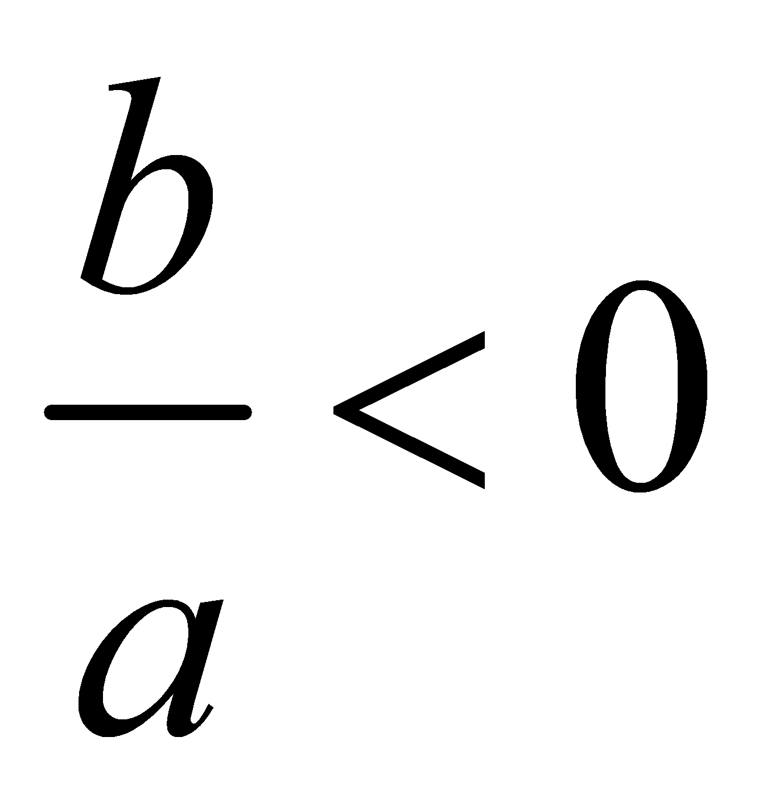
时，若 ，，则______0；
，，则______0；(2)当 时，若
时，若 ，则______0；
，则______0；
(3)已知，，是非零有理数，则 ______；
______；
(4)当与都是整数，且
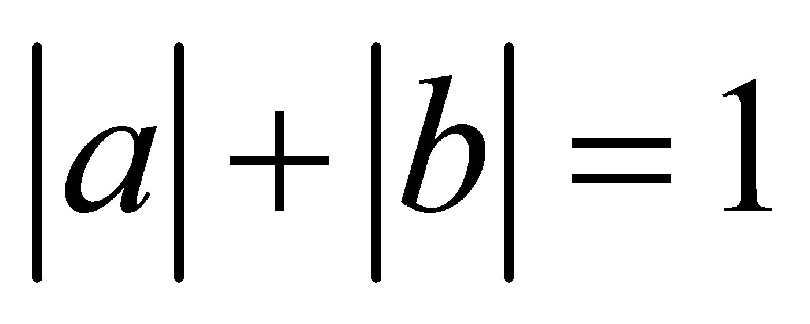
，求的值．（写出分类讨论的过程）24．在解决数学问题的过程中，我们常用到“分类讨论”的数学思想，下面是运用分类讨论的数学思想解决问题的过程，请仔细阅读，并解答问题．
【提出问题】三个有理数满足，求 的值．
的值．
【解决问题】
解：由题意，得三个有理数都为正数或其中一个为正数，另两个为负数．
①都是正数，即 时，
时，
则
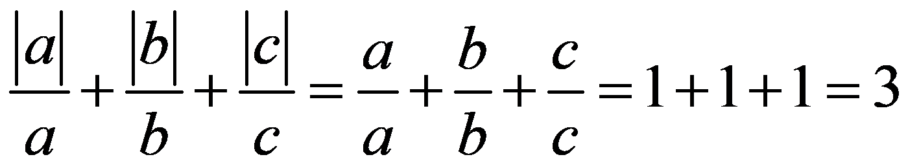
；②当中有一个为正数，另两个为负数时，不妨设
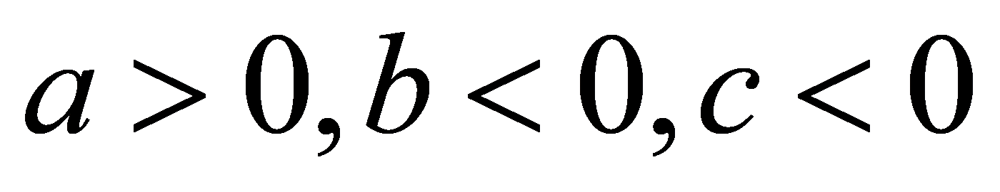
，则 ．
．
综上所述，值为3或－1．
【探究】请根据上面的解题思路解答下面的问题：
(1)，则 _____________，，则
_____________，，则 ___________，，则
___________，，则
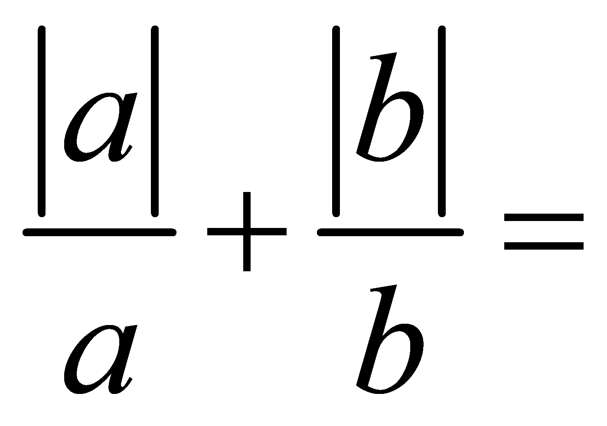
___________；(2)三个有理数满足，求的值；
(3)若为三个不为0的有理数，且 ，求
，求 的值．
的值．
题型六：利用绝对值的几何意义化简绝对值
25．在解决数学问题的过程中，我们常用到“分类讨论”的数学思想，下面是运用分类讨论的数学思想解决问题的过程，请仔细阅读，并解答问题．
【提出问题】三个有理数，，满足，求 的值．
的值．
【解决问题】解：由题意，得、、三个有理数都为正数或其中一个为正数，另两个为负数．
①、、都是正数，即，， 时，则
时，则 ；
；
②当、、中有一个为正数，另两个为负数时，不妨设，， ，则
，则
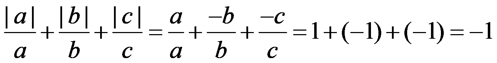
．综上所述，值为3或 ．
．
【探究拓展】请根据上面的解题思路解答下面的问题：
(1)已知、是不为0的有理数，当 时，则
时，则 的值是 ；
的值是 ；
(2)已知、、是有理数，当时，则 的值是 ；
的值是 ；
(3)已知、、是有理数，且 ，求
，求
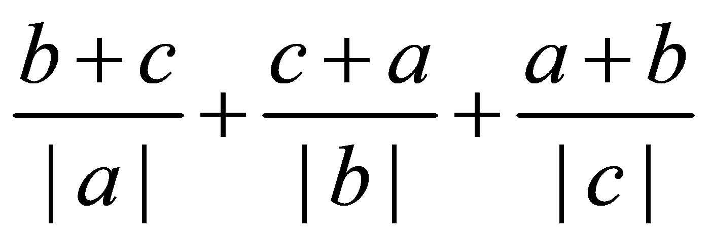
的值．26．数轴是初中数学的一个重要工具，利用数轴可以将数与形进行完美地结合，研究数轴我们发现了很多重要的规律，如果数轴上点 、
、 在数轴上分别表示有理数、，那么、两点之间的距离表示为
在数轴上分别表示有理数、，那么、两点之间的距离表示为 ．例如数轴上表示
．例如数轴上表示 和的两点之间的距离可表示为
和的两点之间的距离可表示为 ．
．
(1)已知数轴上点表示的数为 ，点表示数为
，点表示数为 ，则线段
，则线段 的长度是______．
的长度是______．
(2)表示任意一个有理数，利用数轴回答下列问题：
 若
若 ，求的值；
，求的值；
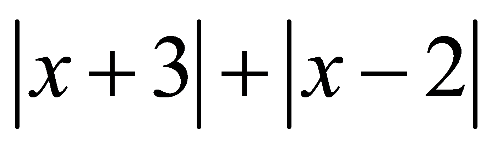
的最小值是多少，这时候的取值范围．27．[教材复习题1变式]教材上有这么一段话“若 ，
， 分别是有理数
分别是有理数 ，
， 在数轴上对应的两点，我们就把，叫作，的一维坐标．一般地，称
在数轴上对应的两点，我们就把，叫作，的一维坐标．一般地，称
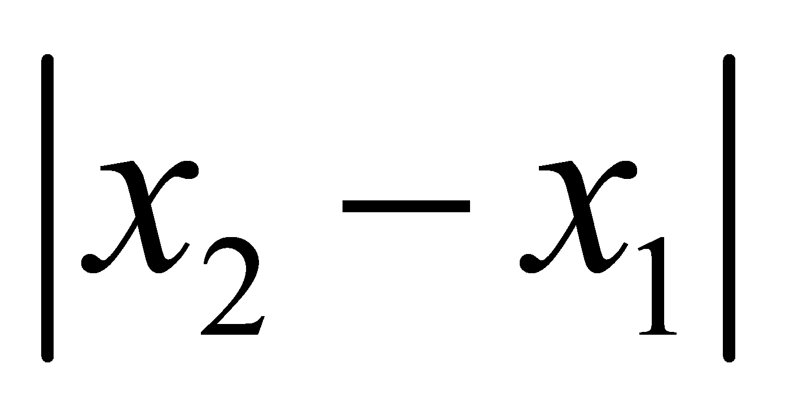
为点与点之间的距离．”(1)对照数轴，填写下表：
| 6 |
| 2 |
|
| 4 | 0 |
|
|
A，B两点的距离 |


(2)请说出 和
和 的意义；
的意义；
(3)求
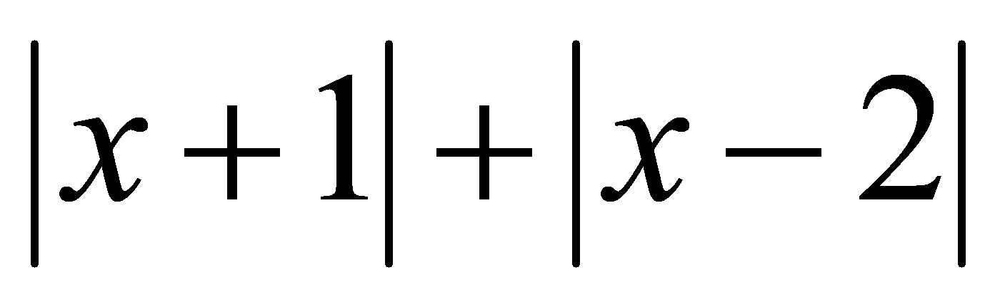
的最小值；(4)当 的值最小时，求x的值．
的值最小时，求x的值．
28．如图，已知数轴上有A，B两个点，分别表示有理数－6，4．若x表示一个有理数．
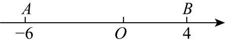
(1)数轴上点A到点B的距离为______；数轴上到点A、B的距离相等的点表示的有理数为______；
(2)若 ，则______；
，则______；
(3)式子
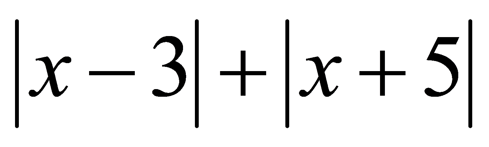
的最小值为______，此时x的取值范围是______；(4)式子
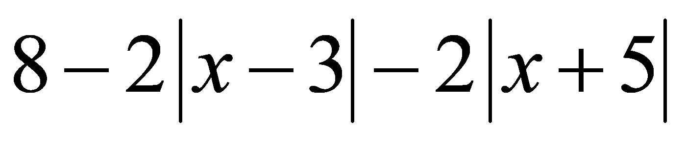
有最大值么？若有，请直接写出最大值；若不存在，请说明理由．29．完成下列题目：
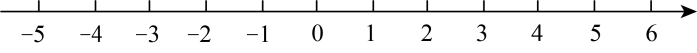
(1) 分别为数轴上两点，点对应的数为
分别为数轴上两点，点对应的数为 ，点对应的数为．
，点对应的数为．
①两点之间的距离为_______；
②折数轴，使点与点重合，则表示的点与表示_______的点重合；
③若在数轴上存在一点 到的距离是点到的距离的倍，则点所表示的数是_______；
到的距离是点到的距离的倍，则点所表示的数是_______；
绝对值拓展材料： 表示数在数轴上的对应点与原点的距离，如：
表示数在数轴上的对应点与原点的距离，如： 表示
表示 在数轴上的对应点到原点的距离而
在数轴上的对应点到原点的距离而 ，即
，即
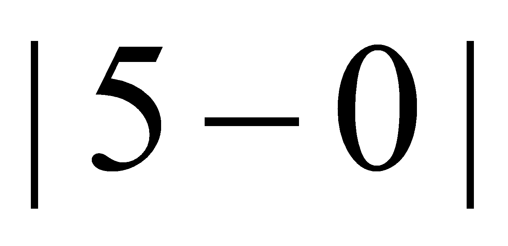
表示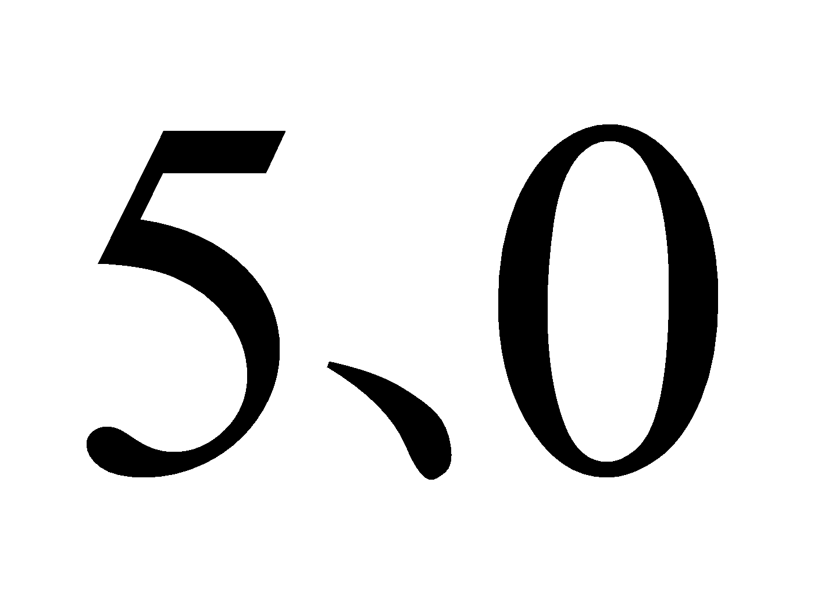
在数轴上对应的两点之间的距离类似的，有： 列表示、在数轴上对应的两点之间的距离．一般地，点在数轴上分别表示有理数
列表示、在数轴上对应的两点之间的距离．一般地，点在数轴上分别表示有理数 ，那么之间的距离可表示为
，那么之间的距离可表示为 ．
．(2)数轴上表示和两点之间的距离为_______，若表示一个有理数，且 ，则
，则
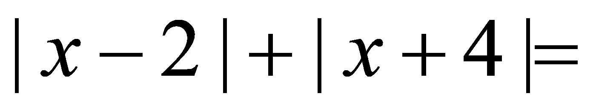
_______．(3)若满足
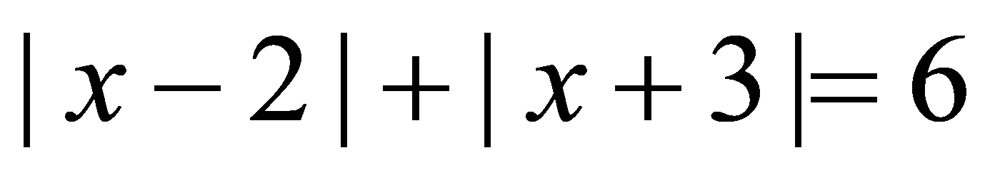
时，则的值是_______．30．舟岱跨海大桥建成于 年，全长
年，全长 千米，桥梁主跨径创外海桥梁世界之最．舟岱跨海大桥上三座索塔与桥面的交点为，，
千米，桥梁主跨径创外海桥梁世界之最．舟岱跨海大桥上三座索塔与桥面的交点为，， ，与，与之间的距离均为
，与，与之间的距离均为
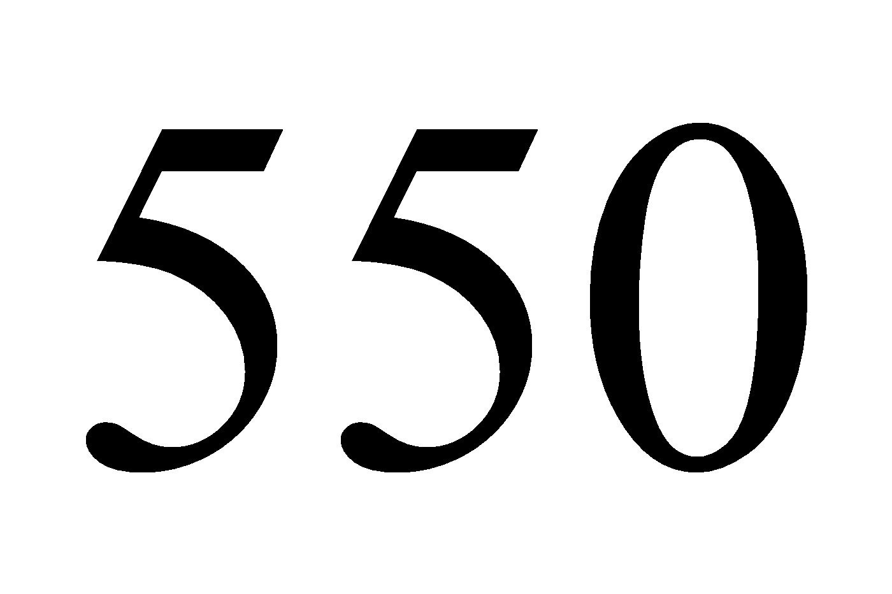
米，如图所示．若以点为原点，向右为正方向，取 千米为单位长度画数轴，那么请解决以下问题：
千米为单位长度画数轴，那么请解决以下问题：
(1)、两点在数轴上所表示的数分别是 、 ．它们是一对（ ）
A． 互为倒数 B．互为相反数
(2)道路养护车甲从点出发，沿着数轴向左行驶，速度为 千米/小时．同时，道路养护车乙从点出发，向右行驶，速度为
千米/小时．同时，道路养护车乙从点出发，向右行驶，速度为 千米/小时．
千米/小时．
①当行驶 小时，甲车和乙车在数轴上表示的数分别是多少？试用代数式表示．
小时，甲车和乙车在数轴上表示的数分别是多少？试用代数式表示．
②当 分钟时，甲、乙两车同时停止，试求出两车的距离．
分钟时，甲、乙两车同时停止，试求出两车的距离．
(3)在（2）的条件下，将甲、乙两车停止时的位置标上记号，分别用、 表示．养护车丙进行协助工作，沿着数轴方向，自左向右行驶．若养护车丙在数轴上所表示的数为，问：与、两点距离之和最小时，对应的应满足的条件为_____．
表示．养护车丙进行协助工作，沿着数轴方向，自左向右行驶．若养护车丙在数轴上所表示的数为，问：与、两点距离之和最小时，对应的应满足的条件为_____．
(4)拓展应用： 试求出 
 取得最小值时，应满足的条件是什么？其最小值为多少？．
取得最小值时，应满足的条件是什么？其最小值为多少？．